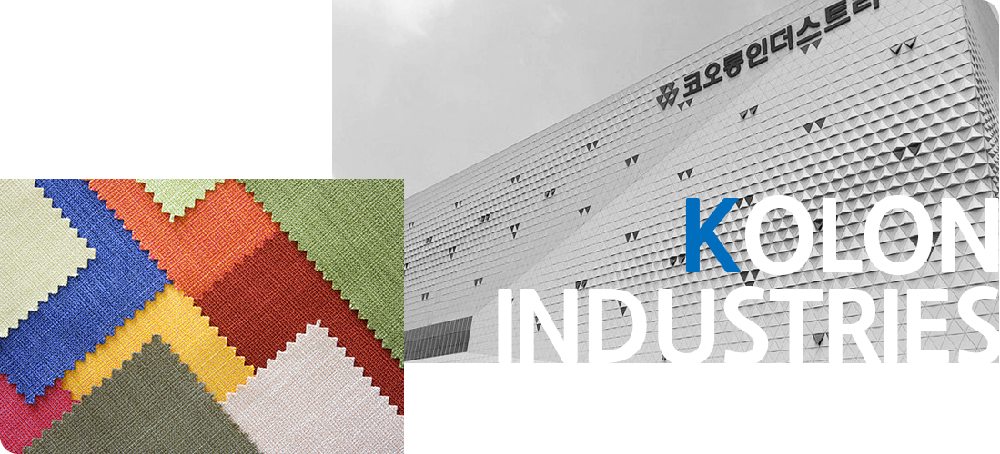

기업개요
회사개요
first도 코오롱인더스트리이며, best도 코오롱인더스트리입니다.
1957년 국내 최초의 나일론 생산을 시작으로 하여
산업 소재, 화학, 필름/전자재료, 패션 시장을 선도하고 있습니다.
코오롱인더스트리㈜는 1957년 국내 최초로 나일론을 생산하여 국가경제 발전에 기여해 온 ㈜코오롱을 전신으로 하고 있으며, 2010년 코오롱 그룹 지주 회사 체제전환의 일환으로 ㈜코오롱의 제조사업 부문에서 분할되어 신설된 기업입니다.
현재는 사업영역을 산업소재, 화학, 필름/전자재료 및 패션의 4대 부문을 중심으로 하여 관련시장을 선도하고 있습니다.
코오롱인더스트리의 변화와 혁신은 앞으로도 지속될 것입니다.
21세기 Global TOP 화학/소재 기업으로 성장해 나가기 위해 코오롱인더스트리㈜는 자동차소재 ,첨단소재, 광학용 필름, 화학 및 패션 등의 고부가가치 제품의 투자 및 증설을 통해 관련산업의 글로벌화를 선도해 나가고자 합니다.
코오롱인더스트리㈜의 변화와 혁신은 앞으로도 지속될 것입니다. 보다 큰 비전을 만들어 가는 회사로 거듭남으로서 주주와 사회에 더욱 크게 기여하는 회사로 자리매김 할 수 있도록 노력하겠습니다.
감사합니다.
CEO 인사말
'변화와 혁신의 모범이 되어 그룹을 성공시키는 회사'로
만들기 위해 회사를 이끌어가고자 합니다.
코오롱인더스트리 대표이사 장희구
그동안 회사발전을 위해 힘써주신 고객 및 주주 여러분께 감사의 말씀을 드립니다. 코오롱인더스트리는 코오롱 그룹 60여 년의 전통을 고스란히 담고있는 주력 모기업입니다. 불모지에서 이룬 결실을 바탕으로 회사 성정을 이룩함은 물론, 오늘의 국가 발전에 및거름이 되어 온 자랑스러운 역사를 가지고 있습니다. 현재는 대한민국을 대표하는 종합 화학/소재 및 패션 기업으로 자리매김하여 세계에서 그 위상을 넓혀 나가고 있습니다.
코오롱인더스트리는 지난 반세기, 끊임없는 성원을 보여주신 고객과 주주 여러분의 성원에 더 크게 보답하고 세계 시장을 선도하는 기업으로 성장하고자 전사적인 역량을 집중하고 있습니다. 자동차소재, 첨단소재, 전자소재 등에 대한 기술개발에 집중함으로써 수익구조를 더욱 고도화하는 데 주력하고 있습니다. 패션사업은 패션 트렌드와 문화의 선도를 통해 고객의 라이프스타일을 새롭게 창출하는 기업이 되기 위해 노력하고 있습니다. 또한, 신기술 및 신소재 개발을 위한 R&D 종합 센터 구축, 국내외 유수 연구기관 및 지방자치단체 등과의 협력 등 기술력 확보를 위한 다양한 노력을 통해 지속 가능한 미래성장 동력 확보에 역량을 집중하고 있습니다.
아울러, 저는 대표이사로서 “Role Model Company for the KOLON Group”이라는 경영방침을 세우고 회사를 이끌어가고자 합니다. 이는 “변화와 혁신의 모범이 되어 그룹을 성공시키는 회사”,“Team KOLON의 리더가 되는 회사”로 우리의 위치를 새롭게 정립할 것임을 의미합니다. 회사는 본 경영방침의 달성을 위해 경쟁력 혁신에 가치를 두고 사업의 전개방식을 바꾸어 나갈 것이며, 문제의 끝장을 보겠다는 끝장경영을 기치로 일하는 방식을 바꾸어 나가겠습니다. 그리고 상생동체와 소통을 기반으로 하는 조직 문화의 혁신을 확대해나갈 계획입니다.
앞으로도 꾸준히 도약하게 될 코오롱인더스트리의 앞날에 지속적인 관심과 성원을 부탁드립니다.
연혁
코오롱인더스트리는 국내 최초로 나일론을 생산함으로써
이 땅에 의류혁명을 일으키면서 한국 경제발전과 그 궤적을 같이하여 왔습니다.
2000 ~ 현재
도전과 성장의 거듭
- 2000
- 09 혈액투석기용 멤브레인 생산
- 2003
- 고합필름 울산공장 인수01
- LCD용 광학산필름 본격 생산
- 2004
- 05 중국 KNC 타이어코드 공장 준공
- 11 중국 KNC 에어백 공장 준공
- 2005
- 아라미드 사업 진출04
- OPW형 에어백 사업 진출05
- 폴리이미드 필름 공장 준공07
- 2006
- 05 수정화처리용 멤브레인 장기계약
- 2008
- 원사사업 (N/F, P/F) 부문 분할03
- 플라스틱 사업, 코오롱 플라스틱(주)에 양도06
- SKC KOLON PI 합작 법인 설립
- 고흡수성수지사업, LG화학에 양도09
- 2009
- 08 FnC 코오롱(주), (주)코오롱에 합병
- 12 (주)코오롱의 제조사업 분할 및 코오롱인더스트리(주) 설립
- 코오롱그룹, 지주회사 체재로 전환
- 2011
- 캠브리지 코오롱(주), 코오롱인더스트리(주)에 합병05
- 2012
- 01 코오롱인더스트리(주) FnC부문 강남으로 사옥 이전
- 2018
- 코오롱인더스트리(주) 본사 및 R&D 센터 마곡 이전04
1983 ~ 1999
사업구조의 고도화
- 1984
- 02 프랑스 롱-프랑사와 엔지니어링 프라스틱 기술 제휴
- 1985
- 폴리에스터필름 공장 준공04
- 스판본드 생산공장 준공10
- 1986
- 10 비디오 테이프(SCEN'A) 공장 준공
- 1987
- 경산공장, 혈액투석기 국산화 성공 및 대량생산체제 돌입07
- 폴리에스터필름 1차 증설 공장 준공10
- 1990
- 05 폴리프로필렌 스판본드 공장 준공
- 09 구미공장, P-19 무인화 공장 준공
- 1991
- 태국 합작법인 시암타이어코오드㈜ 합작공장 준공02
- 1992
- 04 HELS-2(PET 초저수축사) 공장 준공
- 05 인조잔디 코니그린 미국 수출
- 1993
- 인공피혁 사업 본격화07
- 1994
- 03 김천 CIM무인자동화 나일론원사공장 (ACE N-1) 완공
- 1995
- 김천 CIM폴리에스터원사공장(ACE P-1) 준공05
- 인도네시아 해외현지법인(P.T.KOLON INA) 설립08
- 고려나일론, ㈜코오롱에 합병09
- 1997
- 04 인도네시아 P.T.KOLON INA, 필름공장 준공
- 07 과천 코오롱타워 준공
- 10 김천공장 ACE N-2 공장 준공
- 1999
- 스판덱스 사업 진출12
1969 ~ 1982
사업구조의 확대
- 1969
- 03 한국폴리에스텔 주식회사 설립
- 12 한국폴리에스텔,일본 TORAY 및 삼정물산 합작투자계약 체결
- 1970
- 대구공장, 나일론원사 8톤 공장(제2차 증설) 준공04
- 대구공장, 나일론원사 3.2톤 공장(제3차 증설) 준공10
- 1971
- 03 구미공장, 단위규모로 최대인 폴리에스터원사 20톤
- 1973
- 대구공장, 타이어코드 5.4톤 공장가동07
- 1974
- 07 대구공장, 나일론원사 9.5톤 공장(제4차 증설)준공
- 대구공장,폴리에스터원사 12톤 공장(제1차 증설) 준공
- 1975
- 주식상장 한국나이롱 200만주(20억원)06
- 한국폴리에스텔 150만주(15억원)
- 1976
- 02 대구공장, 타이어코드 6톤 공장(제1차 증설) 준공
- 12 구미공장, 폴리에스터원사 30톤 공장(제2차 증설) 준공
- 1977
- 구미공장, 국내 최초로 POY 가동01
- 1981
- 10 코오롱(나일론),코오롱(폴리에스터)합병
- 1982
- 인조잔디 개발 성공08
1957 ~ 1968
국내 최초 나일론 생산
- 1957
- 04 한국나이롱 주식회사 설립
- 11 스트레치 나일론사 공장 기공
- 1960
- 프리마텍스 설비 도입06
- 1961
- 02 나일론원사 제조위한 CHEMTEX社와 기술계약 체결
- 1963
- 스트레치 나일론 첫 수출 (1만 886㎏,3만 9,300달러)04
- 한국 최초로 나일론원사 공장준공 (일산 2.5톤)08
- 1968
- 05 대구공장,나일론원사 7.5톤 공장 준공(제1차 증설)
- 12 대구공장,폴리에스터원사 2.5톤 공장 준공